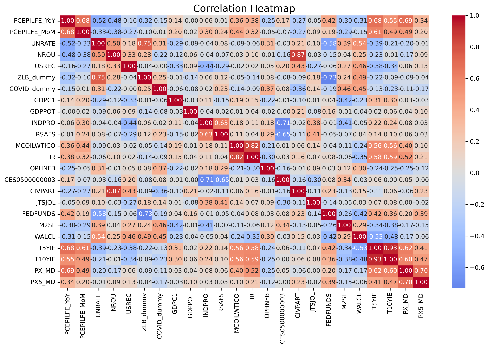
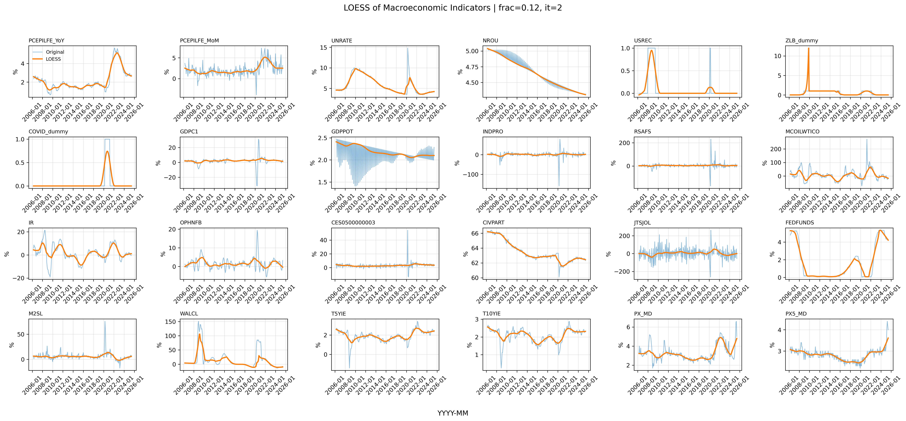
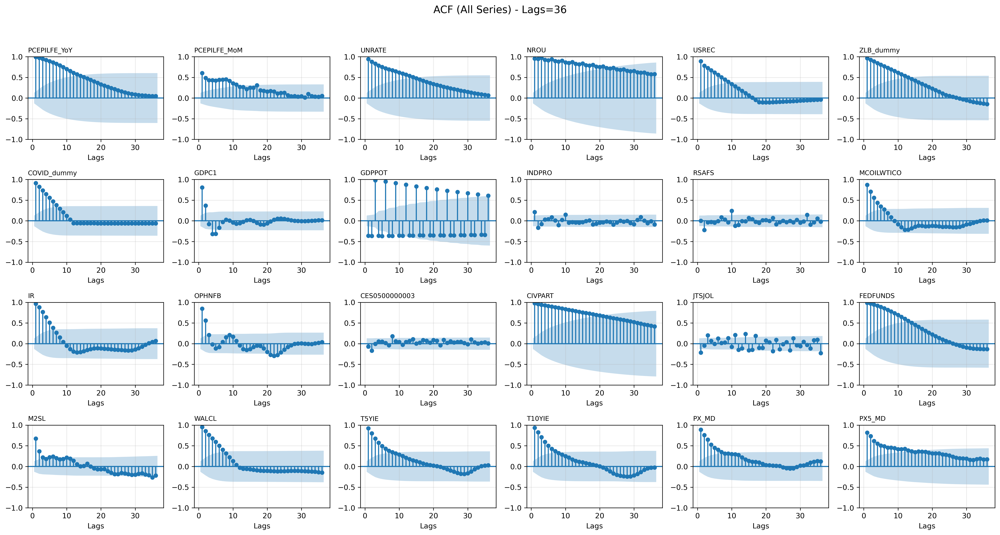

Data Visualization
Static Visualization
Summary Statistics

Histograms
Violin Plots of Macroeconomic Indicators
Grouped by USREC
- A value of 1 is a recessionary period, while a value of 0 is an expansionary period.
Grouped by ZLB_dummy
- A value of 1 is a zero lower bound constraint period, while a value of 0 is not.
Grouped by COVID_dummy
- A value of 1 is a COVID period, while a value of 0 is not.

Correlation Heatmap

Dynamic Visualization
Time Series of Macroeconomic Indicators
Locally Estimated Scatterplot Smoothing (LOESS)

Hodrick–Prescott Filter (HP Filtrer): Trend
Hodrick–Prescott Filter (HP Filtrer): Cycle
Autocorrelation Function (ACF)

Partial Autocorrelation Function (PACF)